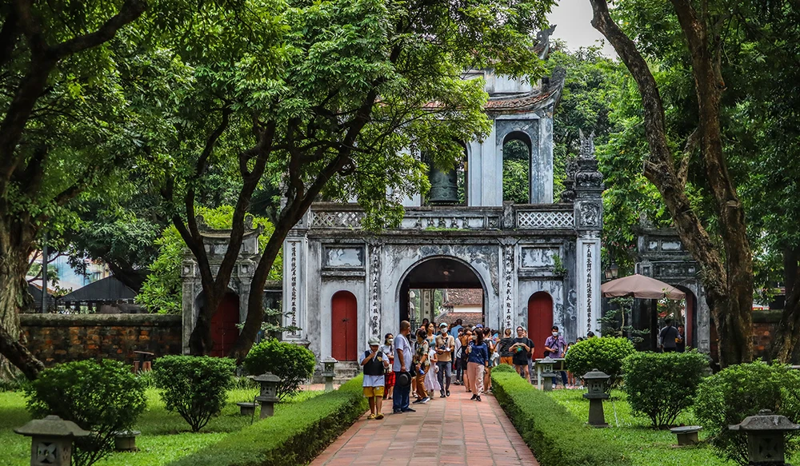

Những Điểm Đến Nổi Bật

Vịnh Hạ Long
Du lịch Hạ Long - 1 trong 7 kỳ quan thiên nhiên thế giới, du khách sẽ được khám phá nhiều hang động độc đáo, các hòn đảo tuyệt đẹp như đảo Mắt Rồng, Ngọc Vừng, hòn Con Cóc,... Cùng với cảnh đẹp, nơi đây còn có nhiều món đặc sản thơm ngon như chả mực, sá sùng, hàu nướng, chả rươi, sam biển,...
Văn Miếu Quốc Tử Giám Hà Nội
Văn Miếu Quốc Tử Giám là ngôi trường Đại học đầu tiên của Việt Nam, nơi ghi dấu bước chuyển mình của nền giáo dục và đào tạo nhân tài nước Việt xưa. Khách du lịch đến với Quốc tử giám sẽ được chiêm ngưỡng lối kiến trúc truyền thống đặc trưng của thời nhà Nguyễn, đồng thời có cơ hội được tìm hiểu về những tiến sĩ có công với đất nước được ghi danh tại đây. Danh sách tiến sĩ này được khắc lên bia và đặt trên lưng của những chú rùa xi măng có kích thước lớn.